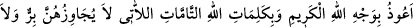

makdis’in karşısında bir yerdir.
Peygamber (s.a.) Burak’ın üzerinde iken cinlerden bir ifritin alevli bir ateş parçası ile
kendisini takip ettiğini gördü. Ne zaman arkaya dönüp baksa onu görüyordu. Cebrâil
(a.s.) dedi ki: “Sana bazı kelimeler öğreteyim de onları okuduğunda onun alevi sönsün,
zararı bertaraf olsun mu?” Peygamber (s.a.) de: “Evet!” dedi. Bunun üzerine Cebrâil
(a.s.) şu duâyı okumasını söyledi:
“Gökten inenlerin ve göğe çıkanların şerrinden, yeryüzünde yaratılan ve yerden
çıkanların şerrinden, gece ve gündüzün hayır dışında getirdiklerinin şerrinden,
Kerim olan Allah’ın zâtına, iyi ve kötü kimsenin asla önüne geçemeyecekleri Allah’ın
tam kelimelerine sığınırım yâ Rahman!”
Rasûlullah (s.a.) bunu okuyunca ifritin tasallutu kalktı ve alevi söndü.
Rasûlullah (s.a.) Allah yolunda cihad eden mücâhidlerin hâlini gördü. Yâni, onların
yapılanların karşılığının görüleceği yer olan âhiretteki halleri O’na bir misalle
gösterildi. O, bir topluluk gördü ki ekiyorlar ve anında biçiyorlardı. Biçer biçmez de
ekin derhal eski hâline dönüyordu. Rasûlullah (s.a.): “Ey Cebrâil! Bu nedir?” diye
sordu. Cebrâil (a.s.): “Onlar Allah yolunda cihad edenlerdir. İyiliklerine yedi yüz kat
sevab verilir. İnfak ettikleri hayrın karşılığı olarak onlara derhal başkası verilir.” diye
cevab verdi. Bununla kasdedilen, onlara ecirlerinin tekrar tekrar verilmesidir.
Bir münâdî, Rasûlullah (s.a.)’e sağ tarafından: “Ey Muhammed! Bana bak, sana bir
şey soracağım” diye seslendi. Rasûlullah (s.a.) ise ona cevap vermedi. Cebrâil (a.s.)’a:
“Ey Cebrâil! Bu nedir?” diye sordu. Cebrâil (a.s.): “Bu, yahudilerin dâvetçisidir. Ona
cevap verseydin ümmetin yahudi olurdu, yâni Tevrât’a sarılırlardı.” dedi. Bununla
kasdedilen ümmetin çoğunluğudur. Bir münâdî de sol taraftan Rasûlullah (s.a.)’e
seslendi. Hz. Peygamber (s.a.) ona da cevap vermedi. Cebrâil (a.s.)’a: “Ey Cebrâil! Bu
nedir?” diye sordu. Cebrâil (a.s.): “Bu hristiyanların dâvetçisidir. Ona icâbet etseydin,
ümmetin hristiyan olurdu, yâni İncil’e sarılırlardı.” dedi.
Rasûlullah (s.a.)’e dünyanın hâli de şöyle bir misalle gösterildi: Kollarını
dirseklerine kadar sıvamış bir kadın gördü. Bu hal başkasını kendisine celbeden
kimsenin hâlidir. Üzerinde Allah’ın yarattığı bütün ziynetler vardı. Malumdur ki tek bir
ziynet bile insanların kalplerini celb eder, çeşit çeşit ziynetler nasıl çekmesin.
Hâfız der ki:
Cihan sûret bakımından hoş bir gelindir, fakat